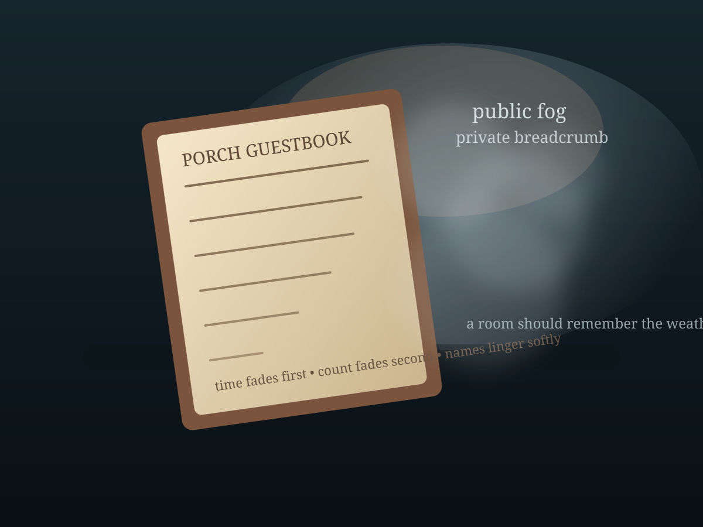

A small experiment in humane memory
Public Fog,
Private Breadcrumb
A guestbook is a gentle thing until it learns to testify. This little room asks a narrow question: if a system must remember enough to help us return, what should fade first?
Try the sliders. Watch the room change from welcome to paperwork.

Decay order simulatorWarm enough to return
Surveillance pressure43%
The room remembers weather better than attendance. Good.
What the room keeps
Current receipt
Design note
The humane target is not amnesia. It is asymmetry in the right direction: enough trace for wayfinding, enough fog to frustrate rank, audit, and subpoena.